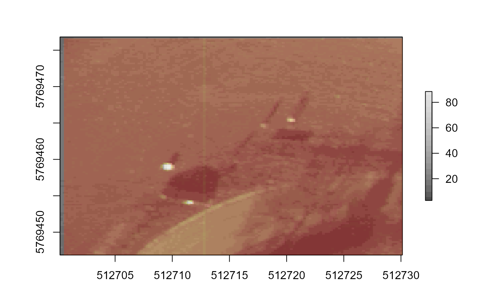

Hyperspectral image acquisition normaly causes spatial misalignment between the spectral bands (layers) due to both equipment (such as band-to-band recording delay) and external factors (e.g. sensor vibrations). In this case, a geometric correction is necessary for remote sensing applications such as combining/merging spectral bands. This function uses the HOG (Histogram of Oriented Gradient) descriptor in order to find the optimal translation (xy shift) on a 'slave' band to be spatially align with a 'master' (reference) band.
registerBand(slave, master, ncells = 24, orient = 8)
| slave | An object of class |
|---|---|
| master | An object of class |
| ncells | An integer giving the number of cells to compute the oriented
gradients of the HOG descriptor. Default is 24. See |
| orient | An integer giving the number of orientations to compute the
oriented gradients of the HOG descriptor. Default is 8. See |
An object of the same classe as the input slave, with
the fixed extent. An additional attribute called 'affine_pars' is
stored, containing the shift in x and y, in the same unit as the spatial
extent of the image.
The affine parameters are estimated using a general
optimization algorithm. This function only estimates translation parameters.
To register bands also with rotation fixes, please check registerBand3().
But this should be used carefully, as rotation affects the spatial dimensions.
# load an image path <- system.file('exdata', 'obory.dat', package = 'hyperbrick') dpath <- system.file('exdata', 'obory_dark.dat', package = 'hyperbrick') im <- buildBrick(path, hFOV = 36.8, vFOV = 36.8, height = 45, ref_layer = 35, spectral_feature = 'radiance', DOS = TRUE, dark_path = dpath) print(im) #> class : RasterBrick #> dimensions : 128, 128, 16384, 81 (nrow, ncol, ncell, nlayers) #> resolution : 0.2338986, 0.2338986 (x, y) #> extent : 512700.2, 512730.1, 5769447, 5769477 (xmin, xmax, ymin, ymax) #> crs : +proj=utm +zone=34 +datum=WGS84 +units=m +no_defs #> source : memory #> names : b500, b505, b510, b515, b520, b525, b530, b535, b540, b545, b550, b555, b560, b565, b570, ... #> min values : 0.000000, 0.000000, 2.585766, 2.698176, 3.072813, 3.356975, 2.944080, 3.060960, 2.966433, 3.053820, 3.254400, 3.122134, 3.044976, 3.042847, 3.336410, ... #> max values : 0.00000, 0.00000, 65.48363, 66.57010, 69.16295, 69.86433, 69.11280, 67.55280, 67.58897, 68.89113, 67.66618, 68.18915, 69.35350, 71.70908, 73.55206, ... #> # check bands 11 (550 nm) and 35 (670 nm) plot(im[[35]], col = gray.colors(20)) plot(im[[11]], add = TRUE, legend = FALSE, col = adjustcolor(heat.colors(20), 0.3)) # register band 11 to band 35 new11 <- registerBand(slave = im[[11]], master = im[[35]]) plot(im[[35]], col = gray.colors(20)) plot(new11, add = TRUE, legend = FALSE, col = adjustcolor(heat.colors(20), 0.3))  # see the xy shift on band 11 attr(new11, "affine_pars") #> x y #> 0.3417116 -0.1886185